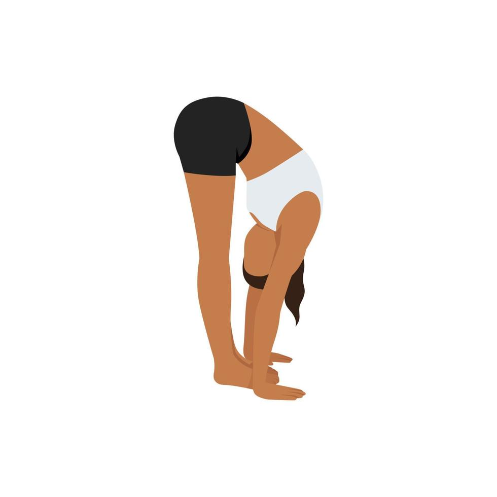
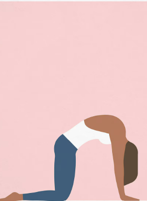
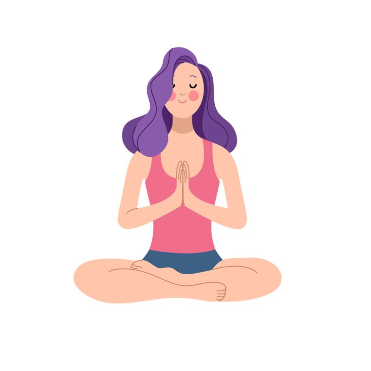
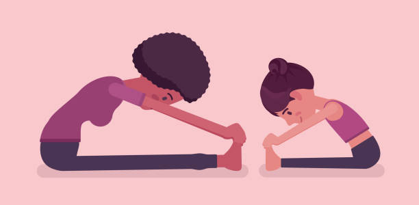
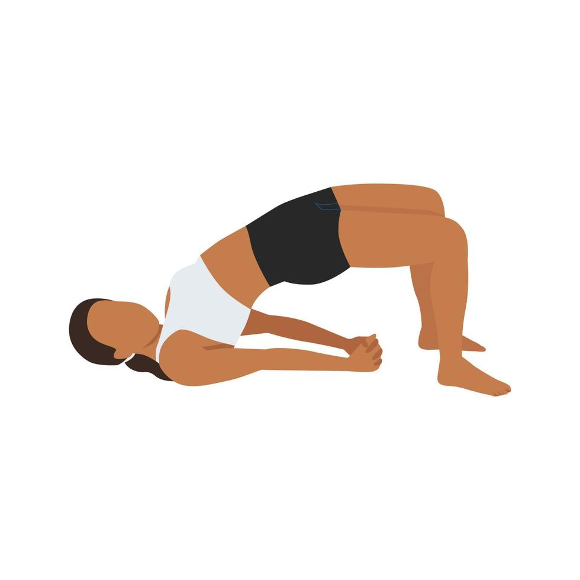
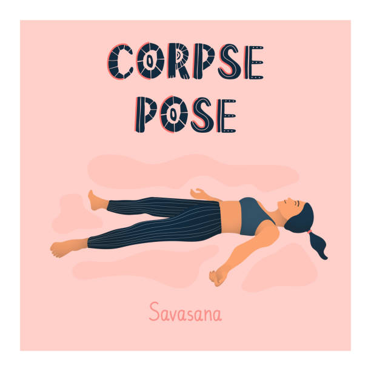
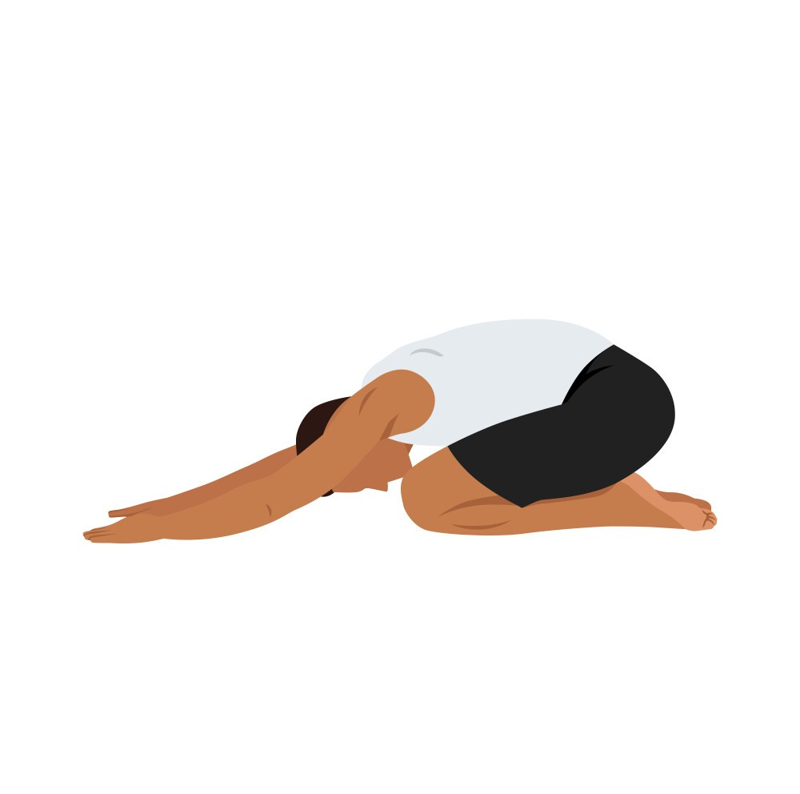

1.Standing forward bend
Reach tall and exhale forward, then bend knees enough to be able to place your palms on the floor, with head pressed against your legs. Be aware of your spine stretching in different directions as you pull your head down and in. For a deeper stretch, try to straighten the legs. Hold this pose for 6-8 breaths, then whilst inhaling, stretch arms outwards and raise them and your torso back to the standing position.

2.Cat-Cow Pose
Cat – Start on all fours, then while exhaling, round your back toward the ceiling and bring your navel up towards your spine. Bring back to the neutral position, of spine and head
Cow – Inhale and tilt your pelvis back so that your tailbone sticks up. Keep your abdominal muscles hugging your spine by drawing your navel in.

3.Easy Pose
Sit up straight, then extend your legs in front of your body, then with knees wide, place each foot beneath the opposite knee and cross your legs in toward your torso. With palms down, place hands onto your knees. Align head, neck, and spine together and sit with your weight balanced. Lengthen spine, but soften your neck and gently relax your feet and thighs. Stay in this position for about a minute, then gently release and change the cross of your legs.

4.Head to knee forward bend
Sit straight with legs extended, bend left leg and bring the sole of your foot to the upper inside right thigh. Your left knee should rest on the floor. Put both palms on either side of right leg and inhale. Turn towards the extended leg and exhale while folding forward. Hold for 5-6 breaths and repeat the pose on the other side.

5.Bridge pose
Lie flat on back and bend both knees, place feet flat on the floor at hip width apart. Slide arms alongside the body with palms facing down. Inhale and lift the hips up, rolling spine off the floor. Squeeze knees lightly together to keep the knees hip width apart. Press down into the arms and shoulders to open the chest upwards. Engage legs and buttocks to lift the hips higher. Breathe and hold for 4-8 breaths.

6.Corpse pose
Lie flat on back with legs close together but without touching, arms at sides with palms facing up. Let eyes and face soften and close eyes, while breathing deeply. Starting at the top of your head, bring your attention to each part of your body until you reach your toes. Hold this position for 4-5 minutes.

7.Childs pose
Kneel on a yoga mat with legs together and slowly sit back onto heels. Extend torso up and bend forward from the hips so your chest rests on your thighs and your forehead rests on the ground in front of you. Let shoulders curl around and rest hands next to your feet with your palms up. Hold this position for 5 – 6 breaths.